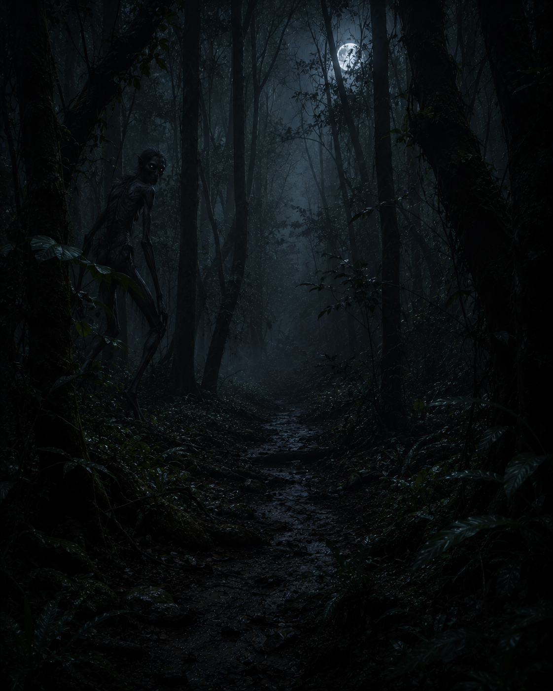
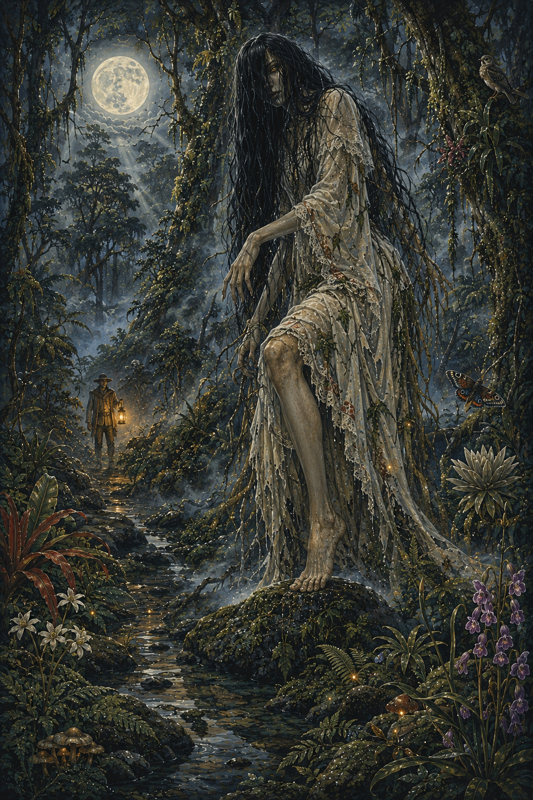
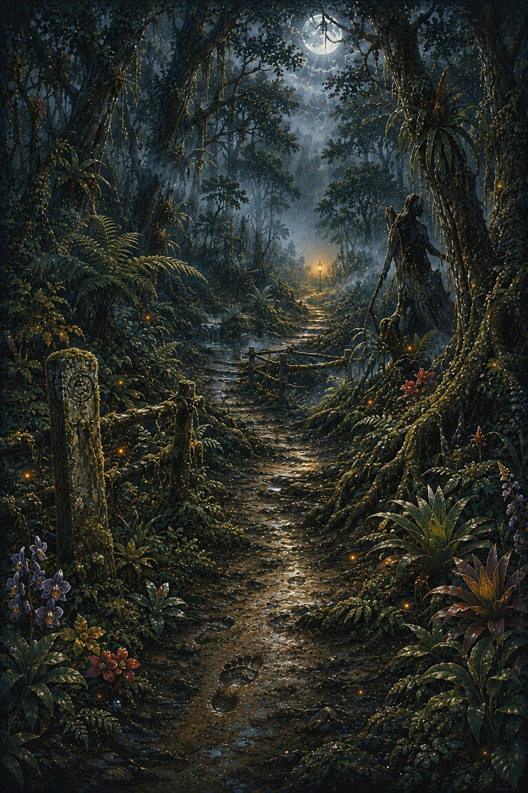
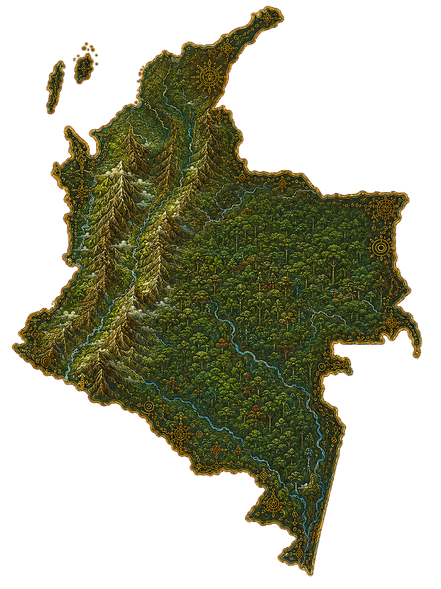
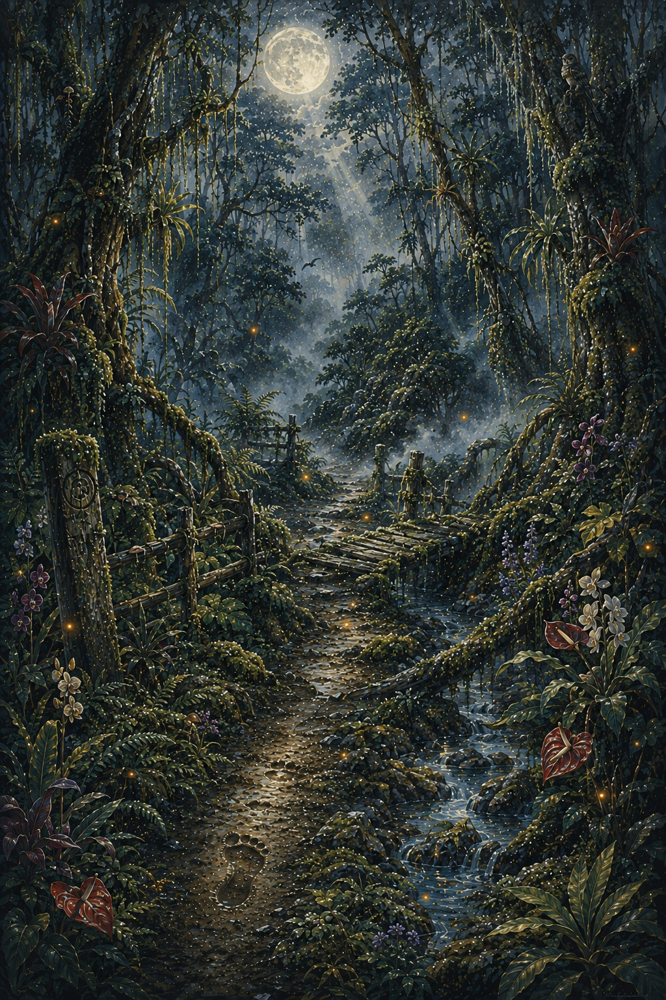
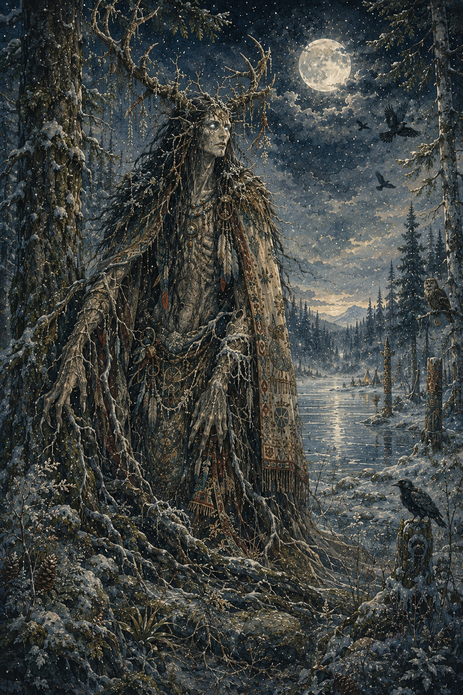

Lamia
Criatura de la mitología griega asociada al bosque y el terror.
La Patasola es una de las leyendas más conocidas del folclore colombiano. Se describe como una mujer hermosa que habita en los bosques, pero que solo tiene una pierna, de ahí su nombre.
Es considerada un espíritu protector de la selva, pero también una figura aterradora para los viajeros que se adentran en zonas prohibidas.

Según la tradición oral, La Patasola aparece en lo profundo de la selva o montañas, atrayendo a los hombres con su belleza para luego revelar su verdadera forma.
Su presencia suele anunciarse con gritos, ecos o un ambiente de terror en el bosque.


En algunas versiones del mito, La Patasola fue una mujer castigada por sus infidelidades o malas acciones, condenada a vagar eternamente por los bosques.
Su transformación simboliza el castigo y la ruptura del equilibrio moral.
La Patasola es utilizada como advertencia para evitar que las personas se adentren solas en los bosques o zonas peligrosas.
Su historia mezcla elementos de terror, naturaleza y moralidad dentro del folclore colombiano.

La Patasola es una leyenda presente en varias regiones de Colombia, especialmente en zonas selváticas y montañosas de la región Andina y Amazónica.
Es una figura muy común en el folclore rural colombiano.


La Patasola simboliza el peligro de la naturaleza y la importancia del respeto por los espacios naturales dentro del folclore popular.
También funciona como advertencia moral y cultural en las comunidades rurales.
Criatura de la mitología griega asociada al bosque y el terror.

Espíritu femenino del folclore irlandés ligado al miedo y la muerte.

Espíritu de los bosques del folclore algonquino asociado al terror.